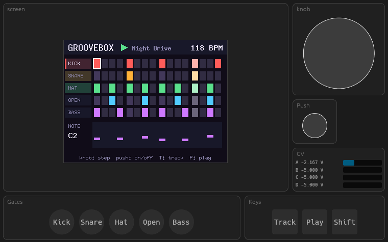

Groovebox
custom board · ST7789 · MCP23008 · DAC8165 · encoder
A 16-step drum machine and bass sequencer. Its gates and pitch CV are played by tartelette's test synth: kick, snare and hats on the expander's gate outputs, a saw following the DAC.
- I2C
- SPI + DMA
- PIO encoder
- bit-banged DAC
- two async tasks
Tick Sound in the Synth tab to hear it. ←→ move, Space toggles a step, T track, P play, hold S + knob for tempo.